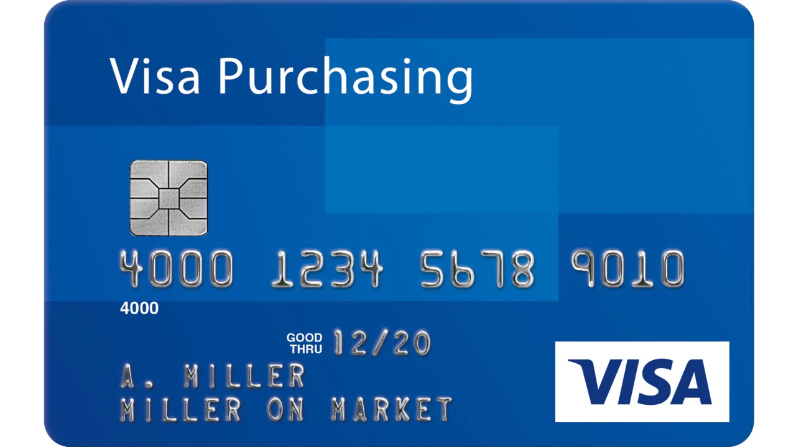
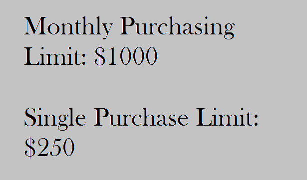
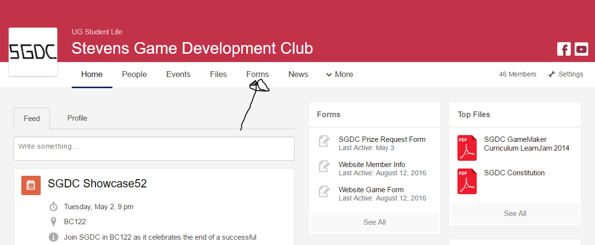
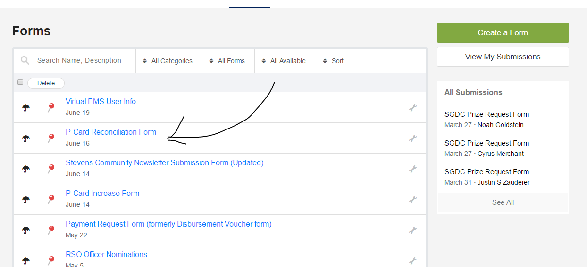
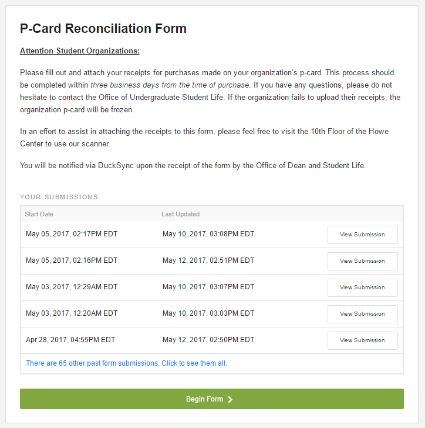
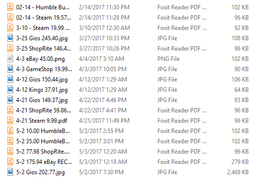
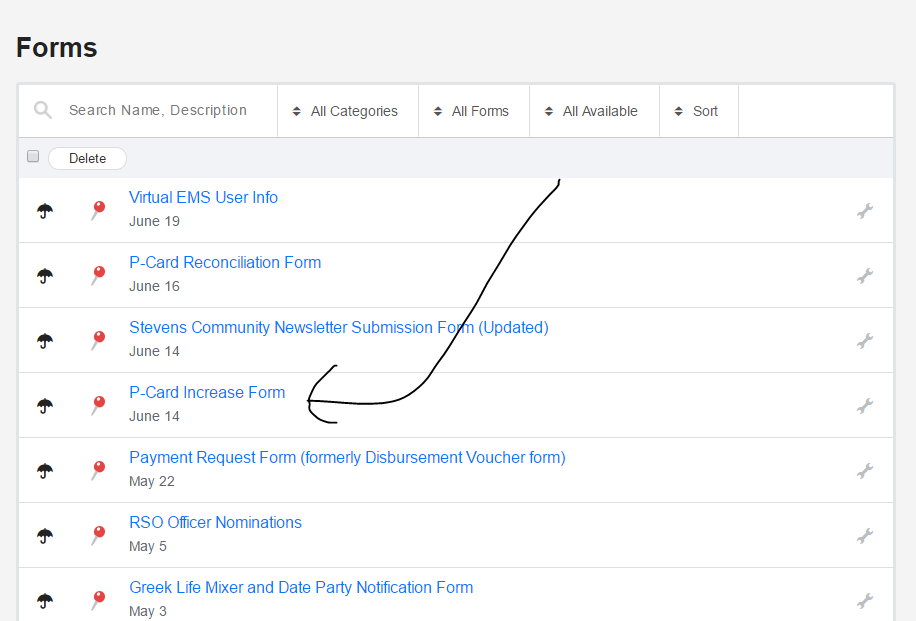

All about P-Cards
What the heck is a P-Card
A Purchase Card is a type of Credit Card owned by Student Life that can be loaned out to clubs. They have a large binder of cards up in the 10th Floor of Howe, each belonging to a single club. If your club is not very new, odds are it has a P-Card and you can retrieve it during the semester by talking to Brielle Melilo in the Office of Student Life (which I'll keep calling SL from here on).
A few things to know logistically about your P-card. By default the card has two limits: a Monthly Purchasing Limit of $1000 and a Single Purchase Limit of $250. What does this mean? If you try to swipe the card for a $251 or higher food order? Declined. You have a few big events and make that swipe that would take you from $999 spent to over $1000? Declined. This is why proper tracking, budgeting, and planning are necessary.
Using and Reconciling your P-card
Using the P-card is easy -- it works like a normal credit card. As long as you're within the monthly and single purchase limits, you swipe your card and it works. However, as a treasurer, you are not done at this step. You still have to Reconcile the receipt.
Every time you swipe your p-card, you will get a receipt. You should immediately take a picture of that receipt on your phone or otherwise and send it to yourself. This is imperitive because you are expected to submit a receipt for every time you use your p-card. If you're shopping online (not on Amazon, you use a Purchase Order form for that), get a screenshot of the receipt and save it. When you get back to your PC (within 3 days of the purchase), navigate to your organization's DuckSync page and then click "Forms".
Find the form titled "P-Card Reconciliation Form", and click on it.
Scroll down and click "Begin Form >"
Submit on behalf of the club whose p-card you swiped, enter the relevant info as the form asks for it, and upload the picture (jpg, pdf, and doc are the preferred formats, but I've submitted png with no problem). You can submit multiple receipts in one form -- if you have multiple receipts this is preferred.
I suggest having a folder where you store your receipts in the following format: "mm-dd location price description"
I need a higher limit!
Don't fret, there's a form for that! Navigate to Forms from the homepage of your Organization, then find the form labeled "P-Card Increase Form"
Enter the relevant club, and begin entering info as needed. A few things to note:
- P-Card increases can only be started in the month during which they'll apply. IE you can't get a March increase in February.
- The increase(s) will revert to the default values on the first day of the next month.
- They won't give you an increase unless you can prove you need it. Breaking down your expenses and explaining why you need the limit increases you do will go a long way towards getting them quickly.
- Email Brielle in SL (or go see her in person) if you have any questions -- before, or after you submit this form.
That about does it for P-Cards. Want to order from Amazon? You'll need a Purchase Order for that. Read up in the next section.
Next Section: Purchase Orders ---->Back to Home